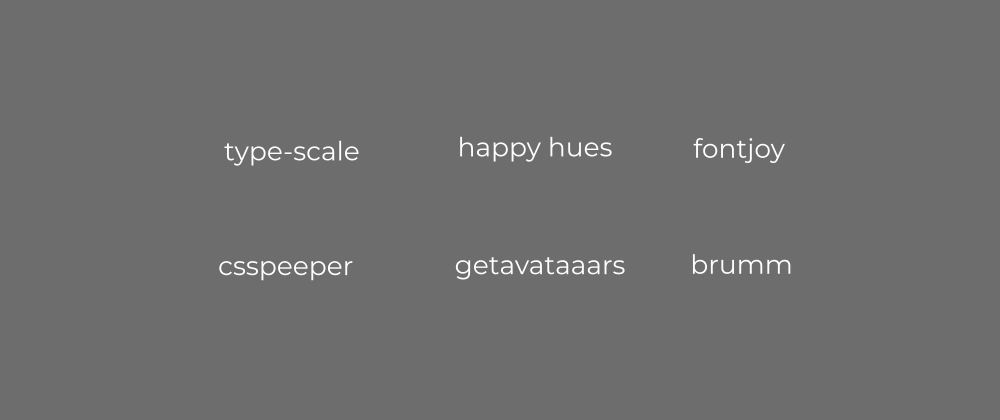
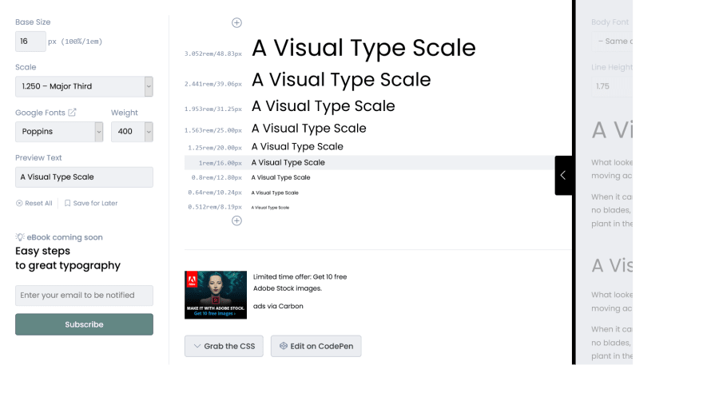
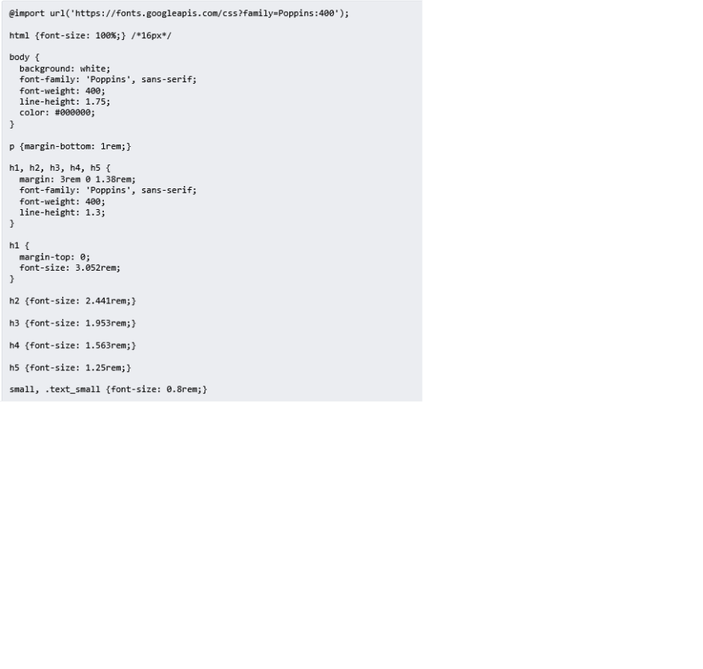
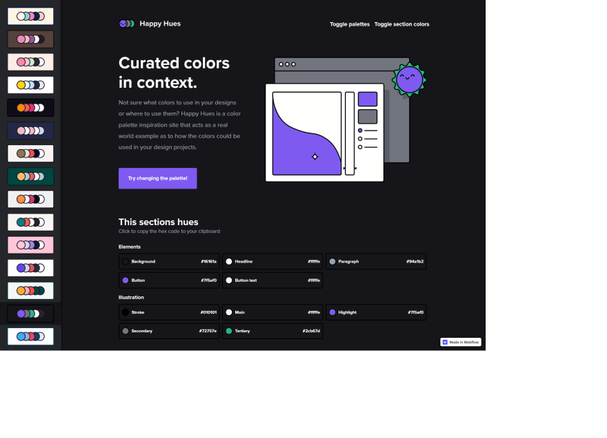
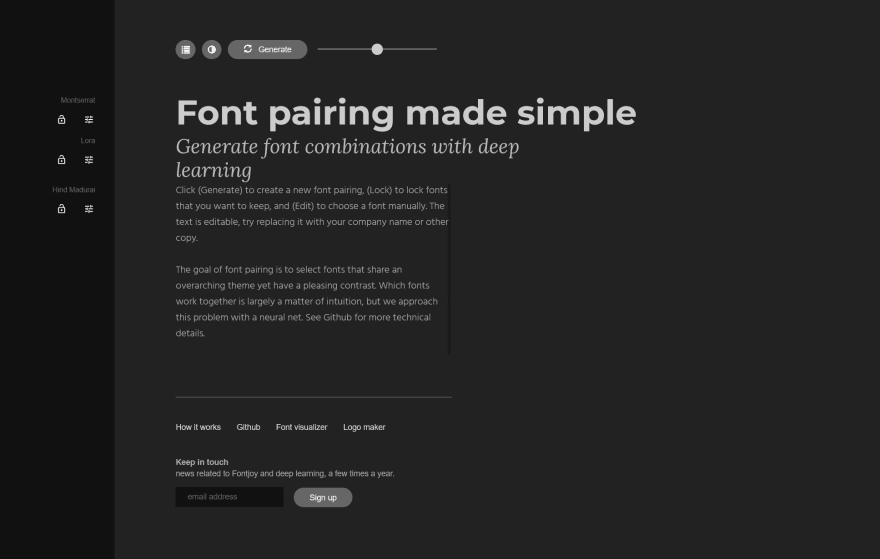
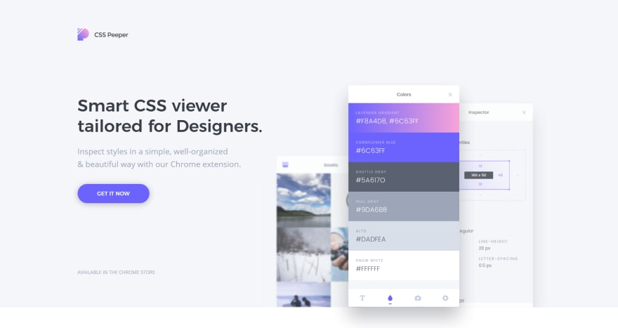
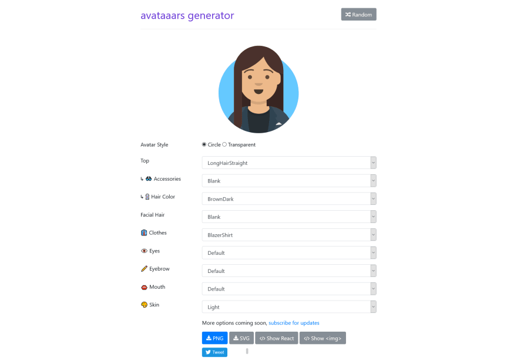
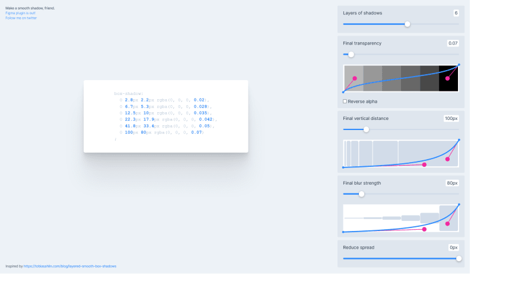

- 原文地址：6 amazing free tools that will save you some time when u are building websites. (Especially for 'non-designer' developers)
- 原文作者：Gaurav
- 译文出自：掘金翻译计划
- 本文永久链接：https://github.com/xitu/gold-miner/blob/master/article/2021/6-amazing-free-tools-that-will-save-you-some-time-when-u-are-building-websites-especially-for-non-designer-developers.md
- 译者：5Reasons
- 校对者：PassionPenguin、greycodee、Chorer

大家好，希望大伙们最近一切都好！在这篇短文中，我将向大家介绍 6 款在搭建网站时为我节省了许多时间的免费工具。希望这些工具也能够帮到你们。
你是否经常为了如何设定页面元素的字体大小而倍感纠结？如果你有这种烦恼，这款软件绝对能帮到你。

只需在网页中输入你的基准字体大小，它就会展示出不同的元素（H1、H2、H3 等等）的字体尺寸。
此外，你还可以从谷歌字体库中挑选不同的字体，并尝试不同的字体大小。
这款工具最棒的点在于，在选择你想要的效果后，它会自动生成对应的 CSS 样式代码，你可以直接把它拷贝到 CSS 文件中。同时，它还会自动导入你所选择的字体库并为 html 设置好 font-family 属性，这样你就不用花时间在不同的文件中定义字体大小了！

如果你不知道怎样为你的网站进行配色设计的话，这款工具会是你学习的起点。

它不仅展示了多种绚丽的配色方案，还为不同的配色设计了真实的范例，教你如何把不同的颜色运用到你的项目设计中。
这款工具告诉大家应该如何为不同的元素选择对应的颜色，同时还展示了如何为网页插图选择配色方案，让插图和网页整体的风格更加匹配。

这款工具可以快速生成对应不同元素的一套字体，供你在网页设计中应用。你可以选择你想要的对比度，单击生成就可以得到想要的那套字体了。

CSS Peeper 是一款 Chrome 拓展程序，有着优秀的用户体验。它能帮助你快速检查不同网页的样式信息，展示网站所使用的颜色和字体。此外，如果你对网站上的某一个特定元素感兴趣，它能够帮助你快速检查出创建对应元素所需的所有 CSS 样式。

这款工具可以帮助你生成有趣的拟人化头像。有非常多不同的样式和风格可供你选择，在完成设计后，你还可以快速地将头像素材以多种格式导出。工具现在支持 PNG 与 SVG，还支持直接生成 React 代码或者图片链接。最重要的是，这款工具是完全免费的！

通过使用这款工具，你可以创造出惊人的 box-shadow 阴影效果。你可以添加多个层级的阴影，并且对每个图层进行调整，从而创造出最自然、最拟真的阴影效果。
希望这篇文章有帮助到你！如果你觉得这篇文章还不错的话，可以将它分享出去并关注原作者的推特 @devggaurav～
感谢你的阅读！😀
如果发现译文存在错误或其他需要改进的地方，欢迎到 掘金翻译计划 对译文进行修改并 PR，也可获得相应奖励积分。文章开头的 本文永久链接 即为本文在 GitHub 上的 MarkDown 链接。
掘金翻译计划 是一个翻译优质互联网技术文章的社区，文章来源为 掘金 上的英文分享文章。内容覆盖 Android、iOS、前端、后端、区块链、产品、设计、人工智能等领域，想要查看更多优质译文请持续关注 掘金翻译计划、官方微博、知乎专栏。